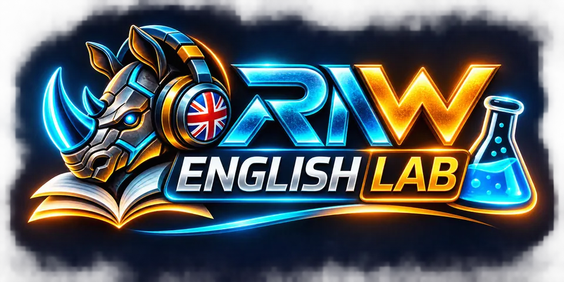

Welcome to English Lab!
Escucha, descubre y aprende jugando.

Don't take it literally! 🗣️
Seis expresiones. Seis situaciones reales. Aprende lo que los ingleses quieren decir, no solo lo que dicen.
¿Qué significa esta expresión en la situación indicada?
🔊 Consejo de pronunciación: Para escuchar voces inglesas más naturales, prueba Chrome en Android con una voz inglesa instalada. En Firefox y otros navegadores, la calidad puede variar según las voces disponibles. Si suena robótico, ¡no es tu inglés! 😄